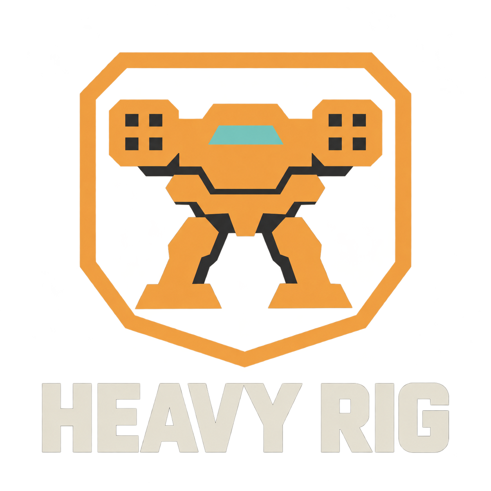

BORROW SOME FREEDOM.
Two light frames. One way out. Choose your rig.
ONE MORE TRY.
The guards caught up. Try the escape again, or choose the other rig. Your company is untouched.
A MERCENARY MECH COMPANY

Your steel. Your crew. Your next contract.
Board the Wayfarer. Choose your next contract.
Start a fresh company. Replaces current campaign progress after confirmation.
Learn your frame. A safe simulator; company progress is untouched.
Replay the Rig Bay escape. Company progress is untouched.
Tune audio, difficulty, controls, and accessibility.
Study the controls, weapons, and life on the frontier.
STANDING BY.
Your throttle and operation are preserved.
SIGNAL UNBROKEN.
SETTINGS
Difficulty changes apply to the next deployment.
Preferences are saved on this device.
KEYBOARD / MOUSE · Select an action, then press a key or click its row with a mouse button. Assigning replaces its aliases and moves that input from any other action. Escape cancels.
CONTROLLER · Choose Simulation or Arcade in the Controls tab. The south face button and Menu / Options retain menu control. Duplicate assignments swap buttons.
SIMULATION · Left stick up/down adjusts persistent throttle; left/right turns legs. Right stick left/right rotates the torso. Keyboard uses throttle and steering.
ARCADE · Left stick or WASD chooses leg direction and speed. Release to slow. Right stick chooses torso facing. Mouse aim works in both modes. Touch always uses arcade movement.
KNOW YOUR FRAME.
COMMAND DECK
Department navigation preserves your selected page, focus, and refit draft. A picker or confirmation owns input until you close it. Navigation never purchases, queues work, or advances time.
Your legs and turret move independently. Simulation uses persistent throttle and steering. Arcade uses WASD / mapped movement keys for direction and returns throttle to neutral on release. Mouse aim works in both modes. Touch always uses arcade movement.
TOUCH PILOTING
Point the left stick toward the heading you want; push farther for more speed. Release to slow; STOP selects neutral. Touch always uses arcade movement.
Tap a visible hostile to track it, or use NEXT. Offscreen, obscured, or destroyed contacts drop the lock. Tap empty ground for manual aim. Tap fitted mount chips to arm any combination, then hold FIRE. VENT uses a coolant charge. The FULL button enters fullscreen where the browser supports it.
FRONTIER CONTRACTS
Use the Starmap to find orange-ringed conflict zones. Inspect local factions and arrival-day postings, then jump to accept work. Borders move as calendar days advance; successful missions expand employer influence nearby. Failure or abort strengthens the opposition. Accepting a contract immediately costs reputation with the opposing faction.
Complete the objective and hold in the extraction zone for three seconds to earn employer favor and payment. Start with a Kestrel and its Rattler. Contracts pay for new mechs and armaments.
Equipment and damage persist between sorties. Aborting or reloading an active sortie retains damage, advances one recovery day, and pays nothing. Accepting a contract alone does not deploy the mech.
MANAGE HEAT
Sustained fire locks all weapons at 100 heat until the reactor cools to 35. Vent with limited coolant or cease fire. Energy weapons require no ammunition but generate substantially more heat.
READ THE FIELD
Orange circles mark fixed artillery impacts. Leave the marked ground. Siege frames resist frontal fire; flank them or attack during the EXPOSED recovery window. The Crown commits to larger barrages below half armor.
BUILD YOUR ARSENAL
Buy armaments at the Market, then fit owned copies to the named hardpoints in the Mech Bay. Each chassis has its own number of slots and allowed weapons: ballistic guns, energy emitters, or missile / rocket launchers. Kestrel gun mounts accept machine guns only. Queue the refit in Engineering; each changed mount takes one calendar day. Mechs under work cannot deploy.
All weapons aim with the turret; missiles guide toward a lock, rockets fly straight. Cluster ordnance bursts over an area. PPC bolts pierce targets.
AMMUNITION & WEIGHT
Choose per-mount reserves in the Mech Bay. Ammunition changes alone cost no credits or calendar time. Loads refill free before each sortie; there is no resupply on the surface. Every projectile consumes a round, including partial launcher volleys.
Base mass includes fixed equipment. Installed weapons and remaining ammunition add weight. Recommended operating weight gives nominal cruise speed. Extra weight causes a steep speed penalty; lighter loads give a modest bonus. Overweight deployment is allowed. You become lighter as you fire.
REFIT & RECOVER
Combat has no repair or coolant drops. Repairs restore integrity only when their work order completes: one day per 20 missing integrity, with no credit cost.
Use Engineering to advance time or jump between planets. Multiple mechs can undergo work in parallel. Each sortie carries two coolant charges.
READY FOR THE LINE.
Frame qualification complete: throttle, steering, compatible weapons, heat, and artillery evasion. Each combat frame has its own handling, cooling, and armor.
Training uses a loaned Warden for guns and launchers, then a Longbow for energy fire and heat. It does not affect your company. Return to the ship to purchase equipment, queue work orders, and deploy your own mech on a contract.
ABANDON THIS RUN?
The current operation will be lost. Your recorded results and settings will be kept.
OPEN IN ANOTHER TAB.
Another tab changed this company's save. Play is paused here to protect the newer progress. Continue in that tab, or close it and reload this one.